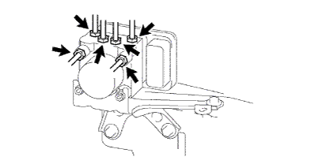
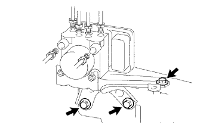

Brake actuator ASSY removal |
| 1. Remove the cross |
Remove the nut and bolts and remove the battery clamp.
Take off the battery.
Take off the battery tray.
| 2. Air cleaner ASSY |
Remove the air cleaner cap w/air cleaner hose No.1.
Remove the air cleaner filter element.
Remove the four bolts and remove the air cleaner case W/Air Cleanine Let No.1 and No.2.
| 3. Brake fluid pull -out |
| 4. Remove the wire harness clamp bracket |
Brake actuator removes the bolt at the top of the ASSY and remove the wire harness clamp bracket.
| 5. Brake actuator bracket Assy |
Cut the connector from the brake actuator asser.
|  |
Use union nut wrench 10 to separate the six brake tubes from the brake actuator.
|  |
Remove the three bolts and remove the brake actuator bracket associated with the brake actuator asser.
| 6. The brake actuator is removed |
Remove two nuts and one pin and remove the brake actuator Asset bracket from the brake actuator bracket.